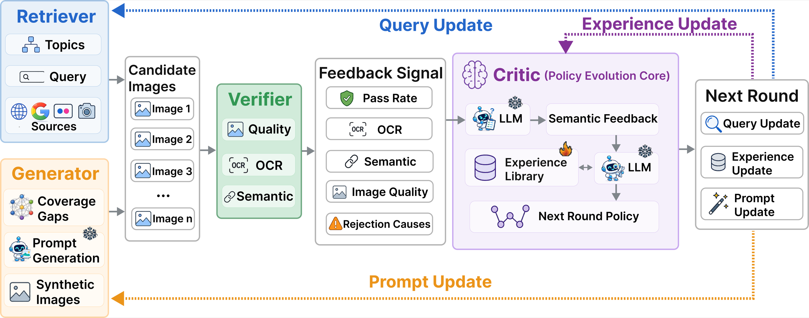
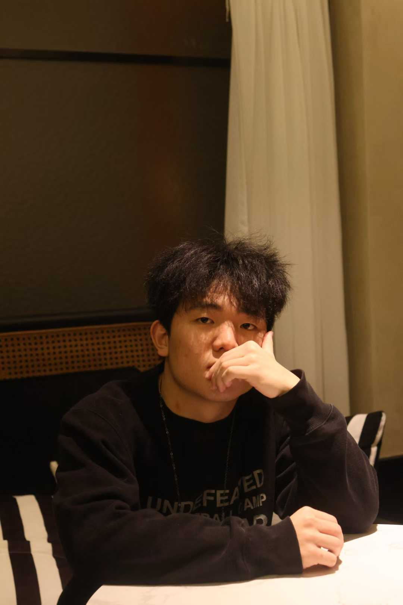
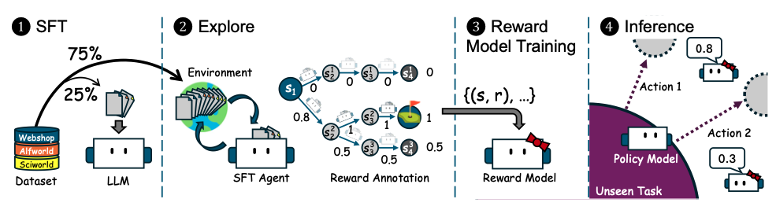
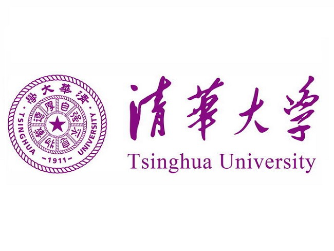
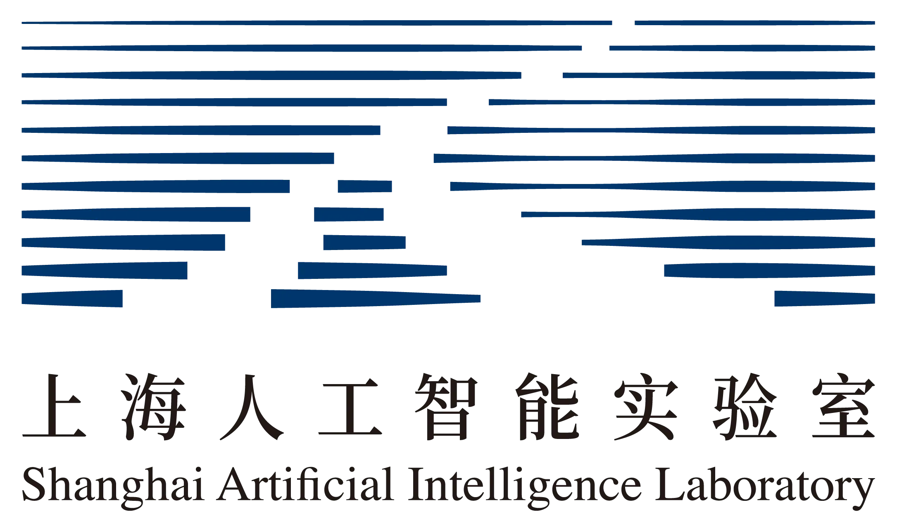
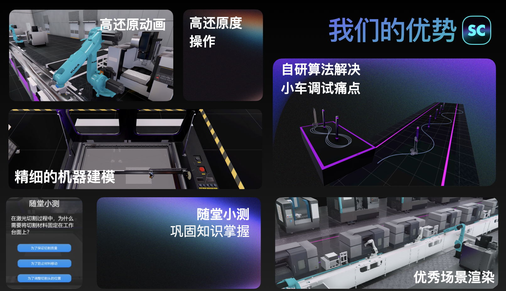

DataEvolver: Self-Evolving Multi-Agent Data Construction for Text-Rich Image Generation
Siyu Yan, Yizhen Gao, Yilin Wang, Dongxing Mao, Alex Jinpeng Wang
arXiv 2026 [New]
I completed my B.S. in Computer Science and Technology at Central South University (2022-2026), advised by Alex Jinpeng Wang and Libo Qin. I will join The Hong Kong University of Science and Technology as an MPhil student in Fall 2026.
My research interests lie in large language models, agents, reward modeling, and data construction for multimodal generation. I was a research assistant at THUNLP, advised by Prof. Maosong Sun and Prof. Zhiyuan Liu, and I am currently a research intern at Shanghai AI Laboratory, advised by Prof. Yihao Liu.

[06/26] Released DataEvolver, a self-evolving multi-agent data construction framework.
[01/25] One paper accepted by ACL 2025.

Siyu Yan, Yizhen Gao, Yilin Wang, Dongxing Mao, Alex Jinpeng Wang
arXiv 2026 [New]

Yu Xia, Jingru Fan, Weize Chen, Siyu Yan, Xin Cong, Zhong Zhang, Yaxi Lu, Yankai Lin, Zhiyuan Liu, Maosong Sun
ACL 2025

Research Assistant, advised by Prof. Maosong Sun and Prof. Zhiyuan Liu (Jul. 2024 - Mar. 2026)

Research Scientist Intern, advised by Prof. Yihao Liu (Apr. 2026 - Present)
Team Leader (Winter 2024)
Total of 11 national-level honors, all as first author or project lead. Selected awards:

A project-oriented virtual simulation platform for engineering training, designed to support interactive learning, practice workflows, and competition-oriented demonstrations. This project was funded by the first batch of Hunan Province College Student Innovation and Entrepreneurship Fund.
President, Apple Lab, Central South University.
Founder & Lead, SmartCloud Technology Team, Central South University.